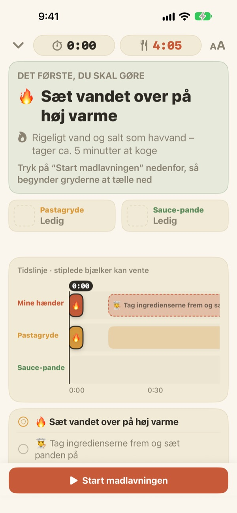
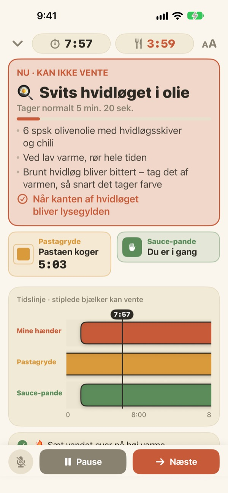
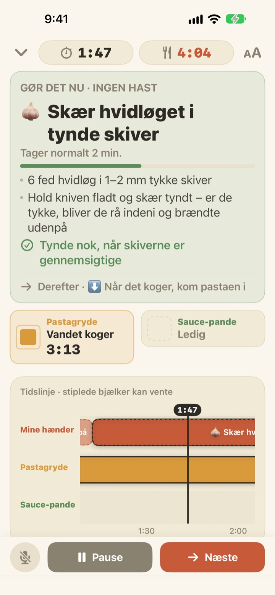
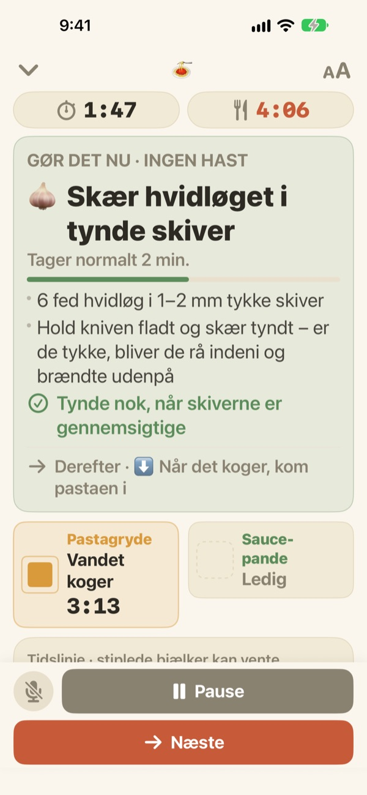

Pastaen koger.
Imens bliver saucen færdig.
Når to gryder kører i hvert sit tempo, viser Geusaie med stor tekst den ene ting, dine hænder skal gøre lige nu. Saucen bliver regnet baglæns fra det øjeblik, pastaen skal hældes fra.
Alle funktioner er gratis. Ingen konto nødvendig.

Prøv selv
Lav en portion aglio e olio i 20 gange fart. Tryk på Start madlavningen, og tryk så på Næste, hver gang du ville være færdig med en opgave. Se, hvordan kortet ændrer sig, når pastaen skal hældes fra.
Tre timere i gang, og alligevel blev pastaen blød?
En timer til pastaen, en til saucen og hvidløget i hovedet, og pludselig ved du ikke, hvad der kommer først. Du står og skærer, lige når pastaen skal hældes fra, og saucen er to minutter forsinket. Geusaie kender opskriften som "først det her, så det der" og fortæller dig kun den ene ting, du skal gøre nu.
Det, der ikke kan vente, bliver rødt
Hæld pastaen fra, hvidløg lige før det brænder på: Når en opgave vil ødelægge retten, hvis den bliver forsinket, bliver kortet terrakottafarvet og beder dig lægge snittearbejdet fra dig et øjeblik.
Når en gryde er færdig, får du en notifikation, også selvom du ikke kigger, med det, du skal gøre med det samme.

Snit, når hænderne er fri
Skære hvidløg, rive ost, afmåle: intet af det har et fast tidspunkt, så der tælles ikke sekunder ned. Bjælken fyldes, mens dine hænder er fri, stopper, når en gryde kalder, og fortsætter, hvor du slap.
Tænder du blusset tre minutter for sent, rykker alt det efterfølgende tre minutter. Planen regnes forfra ud fra det, du faktisk har gjort.

Stil den på køkkenbordet, og gå videre med stemmen
Fire tekststørrelser, så du kan læse den på et par skridts afstand, og skærmen slukker ikke, mens du laver mad.
Våde hænder? Sig næste, så går appen videre til næste opgave uden berøring.

Tre trin til aftensmaden
- 1
Vælg en ret
Du ser cirka hvor lang tid den tager, og hvor mange gryder du skal bruge.
- 2
Tryk på Start madlavningen
Først vises din første opgave, og grydernes ure starter, i det øjeblik du trykker.
- 3
Færdig? Næste.
Tryk på knappen eller sig "næste", så kommer den næste opgave frem.
Farven viser, hvor meget det haster
- Grøn
- Forberedelse. Tag den med ro.
- Sennepsgul
- En gryde har brug for dig. Gør det nu, men uden stress.
- Terrakotta
- Venter du, bliver pastaen blød eller hvidløget brænder på. Gør det nu.
- Grydefelter
- Firkanten, der skrumper, er den tid, der er tilbage. Grydernes tid bliver aldrig skjult.
På tidslinjen er stiplede bjælker opgaver, der godt kan vente.
Alle funktioner er gratis
Gratis
- Begge opskrifter
- En timer til hver gryde og hele tidslinjen
- Notifikation, når en gryde er færdig
- "Næste" med stemmen
- Fire tekststørrelser
- Åbn en opskrift med Siri eller Genveje
Støt udvikleren (frivilligt)
- Hvis appen hjælper dig, kan du give lidt drikkepenge i Indstillinger
- Drikkepenge låser ikke noget op. Uden dem har du stadig alle funktioner
Engangsbeløb, ikke et abonnement.
Ingen konto, ingen reklamer, og den virker uden internet.
Ofte stillede spørgsmål
Jeg siger "næste", men der sker ikke noget.
Mikrofonknappen nederst til venstre er rød, mens appen lytter, og grå, når den er slået fra. Første gang skal du give adgang til både mikrofon og talegenkendelse. Har du sagt nej, kan du slå dem til igen i Indstillinger > Geusaie. Appen lytter efter det ord, der står på dens Næste-knap. I et meget larmende køkken trykker du bare på Næste.
En gryde blev færdig, men jeg fik ingen notifikation.
Tjek, at notifikationer er slået til i Indstillinger > Notifikationer > Geusaie. Et fokus kan gøre dem lydløse. Der kommer kun notifikationer, når en gryde er færdig; forberedelsen presser dig aldrig.
Hvad sker der med planen, hvis jeg starter for sent?
Den regnes om ud fra det, du faktisk har gjort. Tænder du blusset tre minutter senere, rykker alt efterfølgende tre minutter, og saucen bliver stadig regnet baglæns fra det øjeblik, pastaen er klar.
Teksten er for lille.
Tryk på knappen for tekststørrelse øverst til højre på madlavningsskærmen, og vælg Normal, Stor, Større eller Størst. Dit valg bliver husket.
Slukker skærmen, mens jeg laver mad?
Nej. Skærmen forbliver tændt, mens du laver mad, så du aldrig behøver røre den med våde hænder.
Hvilke retter er med?
Aglio e olio (ca. 15 minutter, 2 gryder) og pasta i tomat-flødesauce (ca. 20 minutter, 2 gryder), baseret på opskrifter fra Serious Eats, Gimme Some Oven, RecipeTin Eats og The Burnt Butter Table. Enhver ret med to gryder i gang på én gang passer godt, så skriv endelig, hvad du gerne vil se.
Bliver min stemme optaget?
Nej. Appen lytter kun efter ordet "næste" og optager eller gemmer ikke lyd. Hvis enheden understøtter det, sker talegenkendelsen på selve enheden. Der indsamles ingen personoplysninger.
Kan jeg åbne den med Siri?
Ja. Vælg en ret i Siri eller appen Genveje, så åbner dens madlavningsskærm med det samme. Urene starter først, når du er klar til at sætte vandet over og trykker på Start madlavningen.
Hvilke enheder virker den på?
iPhone og iPad med iOS 17 eller nyere. Ingen konto eller internetforbindelse nødvendig.
Hvordan melder jeg en fejl eller foreslår en opskrift?
Via Indstillinger > Send feedback i appen eller på mail til adressen nedenfor. Skriv gerne din enhedsmodel og iOS-version, så kan vi se på det hurtigere. Vi svarer som regel inden for få dage.
Sidder du fast, har du set noget mærkeligt, eller har du en opskrift i tankerne? Skriv til leeo@kakao.com.